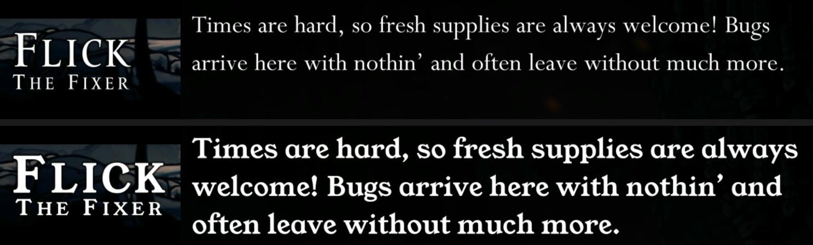

C2 Fonts — Missing Characters and Replacement
Text · for creators.
Text shows □□□ boxes? A font inFonts/_fallback/fills the gaps.
Want a font of your own? Put it inFonts/ZH/(ordefault,JA, …) to replace that language's font.
You'll be able to: cure "tofu" boxes with one file, replace the font of one language, pick a good font, read the [Font] log lines, and know exactly what this feature will and won't touch.
Two folders, two jobs
| Folder | Job | Changes the vanilla look? |
|---|---|---|
Fonts/_fallback/ | adds characters that no loaded font has | no |
Fonts/<target>/ | replaces one font in place | yes, for that font |
They compose. A target folder sets the look of a font. The fallback folder fills what every font on the chain lacks.
Filling missing characters (_fallback)
Silksong's fonts cover the characters the game itself uses. Replacement text — a Chinese localization with a rare hanzi, Japanese, any script the vanilla fonts skipped — can step outside that coverage, and TextMeshPro draws the missing characters as boxes (the community calls it tofu).
The fallback fix is additive: your font is appended to TextMeshPro's global fallback chain, which the game consults only when its own fonts lack a glyph. Characters the vanilla fonts already cover keep their vanilla look, pixel for pixel.
Put a .ttf or .otf font file here (in your pack, or the root working folder):
{pack}/Fonts/_fallback/NotoSansCJKsc-Regular.otfThat's the whole workflow. On load (and on hot reload — the folder is watched), Stitchwork scans all loaded replacement text for characters the game's fonts miss, bakes exactly those glyphs from your font into an atlas, and injects it into the fallback chain. Characters from the game's own text are collected as the game renders them; the ones no loaded font covers are baked in automatically, a second or two after they first show.
- Multiple fonts are allowed (per pack, and across packs) — the chain is searched in pack-priority order, so an earlier pack's font wins a contested character.
- Which font? Anything with the coverage you need. For CJK, the usual community picks are Noto Sans CJK or Source Han Sans — both free under the SIL Open Font License, which permits bundling in a pack. Check the license of anything else you ship.
- Config (
Fontssection): the feature toggle, glyph point size, and a bitmap mode switch — if fallback characters ever render with artifacts, flipFontFallbackBitmapModeon; it's the more reliable mode, at a slight softness cost.FontFallbackEnabledturns the fallback path on or off. It is also the Fallback fonts switch in Settings › Rendering. To open Settings, press0, or click the gear tab at the right end of the pull tabs.FontFallbackPointSize(24–128, default 64) sets the bake size. Larger is sharper at big text sizes, with a larger atlas.FontFallbackScale(0.5–1.5, default 1.0) sets the glyph size. CJK fonts can look a little large next to the game's text; try 0.9. One font can have its own scale: a@stag in its file name, for examplemyfont@s0.85.ttf.
Replacing a font for one language (target folders)
{pack}/Fonts/ZH/MyBrushFont.ttfThe folder name is the target:
EN,FR,DE,ES,IT,PT,JA,RU,ZH,ZH_TW,KO— one folder per language.ZHreplaces the font the game shows in Simplified Chinese;FRthe font it shows in French.PT_BRis the same language asPT.default— the font for each of English, French, German, Spanish, Italian and Portuguese that has no folder of its own. The game draws these six languages with one shared font: Stitchwork fills it from the folder of the language on screen, and bakes again (about a second) when you change the language. In one pack,FRcomes beforedefault; between packs, the higher pack wins.- Any other name is matched against a font asset's name. The log line
[Font] Live font assetslists the names, the slots that use them, and their fallback chains.
What you get
- Stitchwork bakes every character of the game's font from your font, at the game's point size and distance-field spread. The game's line spacing stays, and outlines and shadows keep their widths. The letters keep the proportions of your font: a font with taller capitals or a larger x-height shows larger text, and a line can wrap onto more lines. No setting makes a replacement font smaller (the
@stag works only in_fallback). Select a font with proportions near those of the game's font, or make its letters smaller in a font editor first. - Characters the game's font never had are added from your font too, when your font has them: characters from your text files at the first bake, characters from rendered text as they appear. A new character arrives within about two seconds of its first appearance; that first appearance can show a box or a fallback-folder font for a moment.
- The game's own rendering stays behind your font as a fallback. A character your font lacks shows in the vanilla font or in a fallback-folder font, when one of them has it.
- Some fonts load with a scene; the menu's title font is one. The replacement applies again after each scene load, so a font that was not live at boot changes when its scene arrives.

default replaces both, and its larger letters need one more line. (Bonebottom › BB_FIXER_GENERIC)Rules
- One target folder can hold several fonts; the first by name is used.
- Two packs that target the same slot: the higher pack wins. In the Pack Manager, the lower pack's card says "covered by" the higher one, and the COVERED fold lists the slot with the names of both packs.
- Turn the pack off, remove the folder, or set
FontReplaceEnabledto false, and the game's font comes back at the next reload.FontReplaceEnabledis also the Pack fonts switch in Settings › Rendering. A change of the switch starts the reload at once. - SilksongFontsInject and CustomFontSilksong write the same slots. With one of them installed, the last writer wins, and the log warns. Don't run them beside Stitchwork (mods to remove first).
- The first apply of a session bakes every glyph of the replaced font, thousands for a Chinese font. Expect a pause of about a second in the apply's last step (Finishing…), once per font file in each session. The
[Font] Replacedline has the time.
Reading the log
[Font] Live font assets (N): …— every live font asset, the language slots that use it, and its fallback chain. Printed when the set changes.[Font] Target 'X' matches no live font asset yet— the folder name is not a slot name and not a live asset name. The usual cause: a font archive unpacked directly underFonts/, so its folder name became a target. Move the font file into a target folder.[Font] Replaced 'asset' (target 'ZH') with 'file': N of M glyph(s) into SxS at P pt, spread D px, …— the bake, with its time.[Font] Extended 'asset' by N glyph(s) (K not in font)— new characters appended after the bake.[Font] Restored 'asset'— the vanilla font is back.[Font] Injected N fallback font(s) …andBaked …— the fallback path.
What it will not do
- A replaced font keeps its own advance widths but no kerning pairs: the vanilla pairs do not fit the new shapes, and the new font's pairs are not read.
- Bitmap mode exists only for the fallback path. A replaced font is always an SDF bake.
- A target is a font, not a text object. Every text that uses that font changes; there is no per-object targeting.
Troubleshooting
- Still boxes? Check the log for
[Font]lines: "Baked … N glyphs" means the pipeline ran; "covered none of the needed codepoints" means your font doesn't have those characters either — try Noto. - The font did not change? Look for the
Replacedline. If the log says the target matches no live font asset, the folder name is wrong (see above). If the line is there and the menu did not change, read theLive font assetsline for the asset the menu uses. - The font stays after you remove the file? Nothing is stored on disk: the bake lives in memory for one session. Check that you removed the file from the working folder that the Dashboard's Overview panel shows (by default
<Game folder>\Stitchwork\Fonts\<target>\), not from an older profile folder. When the game sees the removal, the log prints[Font] Restored. - The Pack Doctor flags two common problems: a font parked directly under
Fonts/(not loaded), and non-font files inside a folder (skipped). To run it, click the Check this pack button (the stethoscope) on the pack's card in the Pack Manager. It writes the report and opens it.
Young feature. The bake targets SDF rendering (crisp at all sizes). Bitmap mode is a config option for the fallback path only. If you see any oddity — wrong spacing, artifacts at big sizes, a character misplaced — report the exact character and where it appears; the character set makes those reports very actionable.